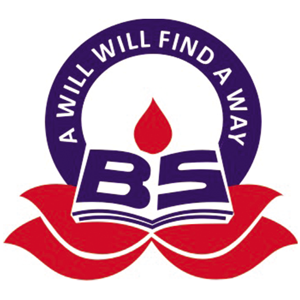

Portals of my Foundation

The Bright School
Schooling from 3rd to 10th standard
International Institute of Information Technology
Pursuing a Btech + MS in CND
Akhil Bhartiya Gandharva Mahavidyalay Mandal
Obtained a diploma in Indian Classical Music

FIITJEE Limited
Attended an integrated programme for 2 years of JEE preparation.